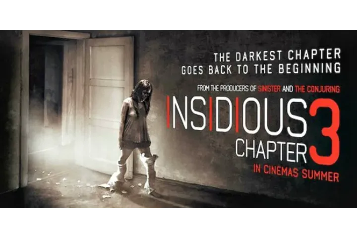

| Insidious: Chapter 3 | |
|---|---|
|  | |
| Film | Insidious: Chapter 3 |
| source cerita: | wikipedia |
| Tanggal rilis | 5 juni 2015 |
| Bahasa | Bahasa Inggris |
| Durasi | 98 menit |
Pada tahun 2007, tiga tahun sebelum hantu Lambert, remaja Quinn Brenner bertemu dengan pensiunan ahli iblis, Elise Rainier.
Elise dengan enggan setuju untuk mencoba menghubungi arwah ibu Quinn, Lily, yang meninggal satu tahun sebelumnya. Namun, Elise mendesak Quinn untuk tidak mencoba menghubungi ibunya lagi setelah merasakan adanya kekuatan jahat.
Grace, seorang wanita tua yang tinggal di gedung apartemen milik Quinn dan menderita demensia, mengatakan beberapa hal yang aneh dan samar-samar kepada Quinn, sepertinya menyinggung Arwah.
Quinn kemudian menghadiri audisi untuk sekolah seni pertunjukan. Setelah meninggalkan audisi, ia melihat sosok misterius melambaikan tangan kepadanya dari kejauhan di jalan. Karena terganggu, ia tertabrak mobil, kedua kakinya patah.
Sekarang terjebak di rumahnya bersama ayahnya, Sean, dan saudara laki-lakinya, Alex, Quinn mulai mengalami fenomena paranormal, termasuk melihat penampakan roh gelap yang mengenakan masker oksigen yang dikenal sebagai Man Who Can't Breathe. Quinn menyadari bahwa dia adalah sosok yang sama yang menyebabkan kecelakaannya. Sean bertemu dengan suami Grace, Harry, dan mengetahui bahwa Grace telah meninggal dunia.
Sean bertemu dengan Elise, yang sama seperti dirinya juga sedang berduka setelah kematian suaminya, Jack, dan mencoba meyakinkannya untuk membantu putrinya. Elise menolak, dengan menyatakan bahwa kunjungannya sebelumnya ke dunia spiritual yang gelap di alam baka membuatnya menyadari bahwa roh jahat - Pengantin Wanita Berbaju Hitam - memburunya. Namun, dia diyakinkan oleh teman dan mantan koleganya, Carl, untuk terus menggunakan kemampuan spiritualnya setelah Carl mengingatkannya tentang kasusnya yang sukses yang melibatkan Josh Lambert pada tahun 1986 dan bahwa dia lebih kuat daripada roh-roh itu, karena dia masih hidup.
Karena penolakan awal Elise, Alex menyarankan Sean untuk menghubungi para ahli demonologi, Specs dan Tucker, yang telah membangun pengikut di internet. Selama penyelidikan mereka, Quinn dirasuki oleh Man Who Can't Breathe dan menyerang Sean, Specs, dan Tucker. Sean menyadari bahwa Specs dan Tucker adalah penipu dan bersiap untuk mengusir keduanya hingga Elise tiba. Menyimpulkan bahwa tujuan roh jahat itu adalah untuk memikat calon korban ke alam baka, sehingga ia dapat memakan kekuatan hidup mereka, Elise memutuskan untuk memasuki dunia spiritual dan meminta bantuan Specs dan Tucker.
Elise memasuki Further dan bertarung singkat dengan Pengantin Berbaju Hitam sebelum dia menemukan roh Jack.
Jack mulai mendorong Elise untuk melakukan bunuh diri, agar mereka dapat bersatu kembali. Elise menyadari bahwa Jack sebenarnya adalah Man Who Can't Breathe yang menyamar dan memerintahkan untuk membebaskan Quinn. Quinn muncul. Elise dan Man Who Can't Breathe terlibat dalam pertarungan memperebutkan Quinn sebelum Elise melarikan diri dari The Further dan menyadari bahwa Quinn harus mengalahkannya sendiri. Meskipun Quinn pada awalnya berada dalam posisi yang kurang menguntungkan, Elise menerima pesan dari roh Grace: Lily telah meninggalkan surat untuk dibaca Quinn sebelum ia lulus SMA, tetapi Quinn tidak pernah menemukannya.
Elise memanggil arwah Lily untuk membantu. Lily tiba-tiba muncul di Further dan membantu Quinn mengalahkan Man Who Can't Breathe dengan menginspirasinya untuk berdiri sendiri dan melepaskan topengnya, yang tampaknya mencekik dan menghancurkannya. Quinn lolos dari The Further. Elise memberikan kata-kata perpisahan kepada keluarga, termasuk kata-kata penyemangat dari arwah Lily. Dia pergi bersama Specs dan Tucker dan ketiganya setuju untuk membentuk kemitraan.
Kemudian di rumahnya, anjing Elise menggonggong pada kekuatan yang tidak terlihat. Elise tidak dapat melihat bahwa di belakangnya, ada iblis dengan wajah merah yang mengawasi.